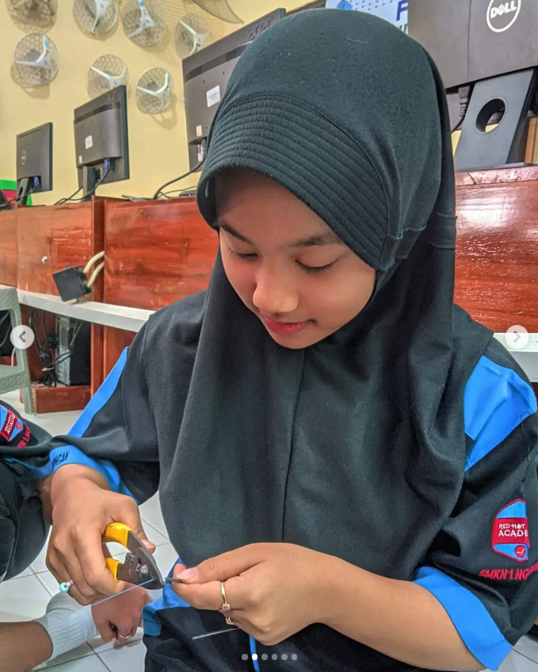

Saya adalah siswi SMK jurusan Teknik Komputer dan Jaringan yang suka belajar hal baru, terutama di dunia teknologi dan desain web. Web ini saya buat sebagai salah satu cara mengekspresikan diri dan belajar membuat tampilan yang menarik.
Saya belajar di SMKN 1 Nglegok jurusan Teknik Komputer dan Jaringan. Saat ini saya berada di kelas 2 dan sedang mempersiapkan diri untuk PKL. Selama di sekolah, saya mempelajari berbagai hal seperti instalasi jaringan, sistem operasi, pemrograman dasar, dan troubleshooting perangkat keras. Selain pelajaran teknis, saya juga belajar mengembangkan soft skill seperti kerja sama tim, komunikasi yang baik, dan manajemen waktu. Saya sering memanfaatkan waktu di luar pelajaran untuk memperdalam materi melalui internet, mencoba membuat desain sederhana, dan belajar hal baru yang berkaitan dengan dunia teknologi. Bagi saya, pendidikan adalah perjalanan untuk tumbuh dan berkembang, bukan hanya sekadar mencari nilai, tapi juga membentuk diri agar lebih siap menghadapi masa depan.
Beberapa sertifikat yang saya miliki antara lain:
Selama belajar di jurusan Teknik Komputer dan Jaringan, saya menguasai beberapa keahlian berikut:
Linux:Ingin tahu lebih banyak atau bekerja sama? Hubungi saya melalui email atau Instagram ya!